Data Structures and Algorithms
with Object-Oriented Design Patterns in Java
Data Structures and Algorithms
with Object-Oriented Design Patterns in JavaWhen a search is successful, exactly d+1 internal nodes are visited, where d is the depth in the tree of object of the search. For example, if the object of the search is at the root which has depth zero, the search visits just one node--the root itself. Similarly, if the object of the search is at depth one, two nodes are visited, and so on. We shall assume that it is equally likely for the object of the search to appear in any node of the search tree. In that case, the average number of nodes visited during a successful search is 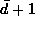, where 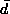 is the average of the depths of the nodes in a given tree. That is, given a binary search tree with n>0 nodes,
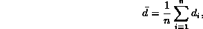
where  is the depth of the
is the depth of the  node of the tree.
node of the tree.
The quantity 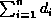 is called the internal path length . The internal path length of a tree is simply the sum of the depths (levels) of all the internal nodes in the tree. Clearly, the average depth of an internal node is equal to the internal path length divided by n, the number of nodes in the tree.
Unfortunately, for any given number of nodes n, there are many different possible search trees. Furthermore, the internal path lengths of the various possibilities are not equal. Therefore, to compute the average depth of a node in a tree with n nodes, we must consider all possible trees with n nodes. In the absence of any contrary information, we shall assume that all trees having n nodes are equiprobable and then compute the average depth of a node in the average tree containing n nodes.
Let I(n) be the average internal path length of a tree containing n nodes. Consider first the case of n=1. Clearly, there is only one binary tree that contains one node--the tree of height zero. Therefore, I(1)=0.
Now consider an arbitrary tree, 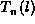,
having  internal nodes altogether,
l of which are found in its left subtree, where 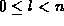.
Such a tree consists of a root,
the left subtree with l internal nodes and
and a right subtree with n-l-1 internal nodes.
The average internal path length for such a tree is the sum
of the average internal path length of the left subtree, I(l),
plus that of the right subtree, I(n-l-1),
plus n-1 because the nodes in the two subtrees
are one level lower in .
internal nodes altogether,
l of which are found in its left subtree, where 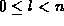.
Such a tree consists of a root,
the left subtree with l internal nodes and
and a right subtree with n-l-1 internal nodes.
The average internal path length for such a tree is the sum
of the average internal path length of the left subtree, I(l),
plus that of the right subtree, I(n-l-1),
plus n-1 because the nodes in the two subtrees
are one level lower in .
In order to determine the average internal path length for a tree with n nodes, we must compute the average of the internal path lengths of the trees averaged over all possible sizes, l, of the (left) subtree, .
To do this we consider an ordered set of n distinct keys,
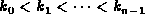.
If we select the 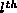 key, , to be the root of a binary search tree,
then there are l keys, 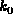,  , ..., 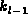,
in its left subtree and
n-l-1 keys, 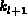, 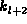, ...,
, ..., 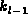,
in its left subtree and
n-l-1 keys, 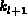, 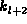, ...,  in its right subtree.
in its right subtree.
If we assume that it is equally likely
for any of the n keys to be selected as the root,
then all the subtree sizes in the range are equally likely.
Therefore, the average internal path length for a tree with  nodes is
nodes is
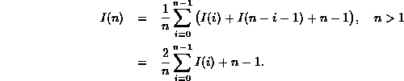
Thus, in order to determine I(n) we need to solve the recurrence
To solve this recurrence we consider the case n>1
and then multiply Equation  by n to get
by n to get
Since this equation is valid for any n>1, by substituting n-1 for n we can also write
which is valid for n>2.
Subtracting Equation from Equation gives
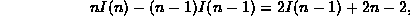
which can be rewritten as
Thus, we have shown the solution to the recurrence
in Equation
is the same as the solution of the recurrence
 Copyright © 1998 by Bruno R. Preiss, P.Eng. All rights reserved.
Copyright © 1998 by Bruno R. Preiss, P.Eng. All rights reserved.